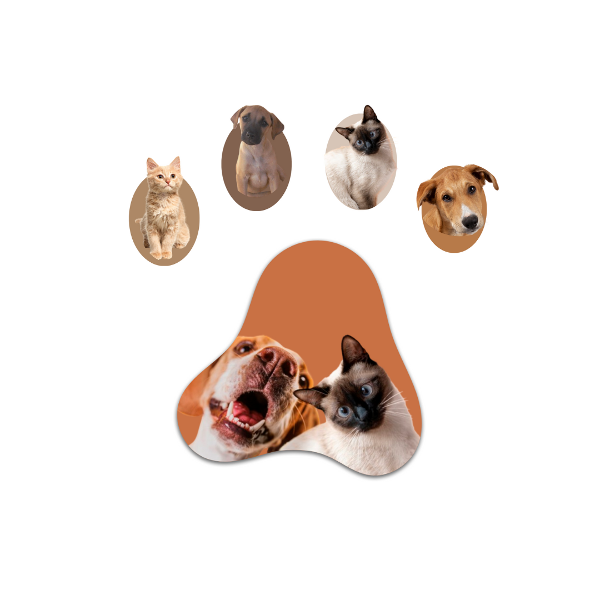

Bem-vindos ao "Me Adote Jp"
O que você encontra por aqui? Muito amor e carinho
Aqui nós cuidamos para que você possa ter a oportunidade de cuidar e dar todo o amor do mundo para esses grandes amigos e companheiros. Com muita responsabilidade e amor, nós resgatamos animais de rua erecebemos também de pessoas que não possuem mais condições de cuidar dos seus amigos. Nossos amores estão esperando por você!
